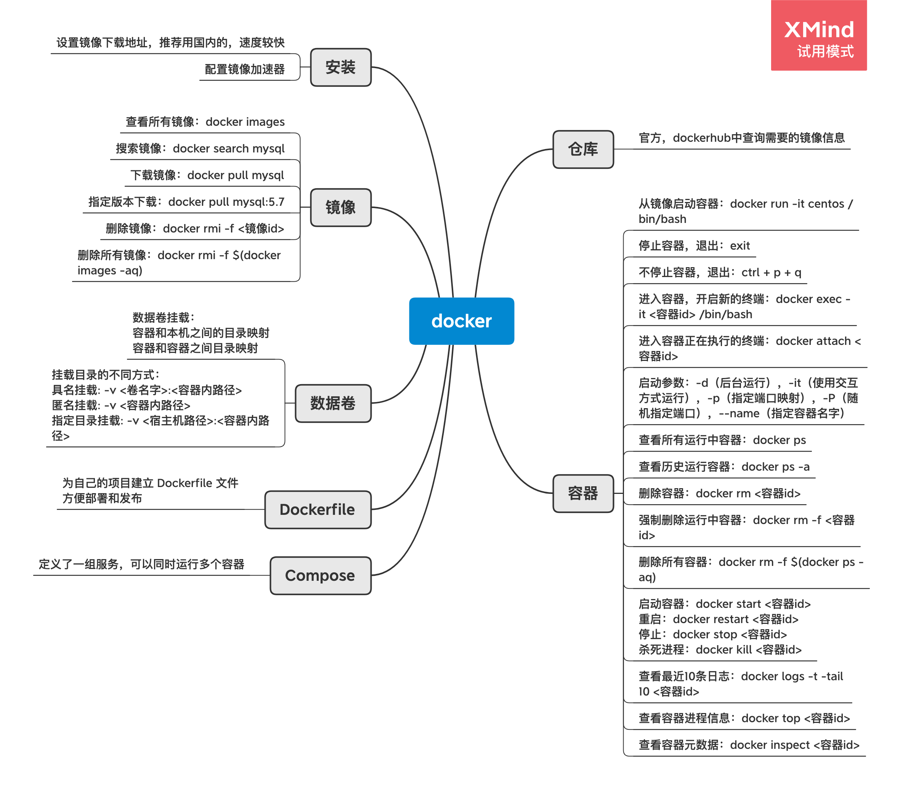

Docker入门

名词解释
镜像（image）
镜像就是一个模板，可以通过这个模板创建多个容器。镜像是一种轻量级，可执行的独立软件包，用来打包软件运行环境和基于运行环境开发的软件，它包含运行某个软件所需的所有内容：代码、运行时、库、环境变量和配置文件等。
容器（container）
利用容器可以独立运行一个或者一组应用。容器通过镜像来创建。
仓库（repository）
存放镜像的地方。可以在官方Dockhub中搜索到许多镜像，并查看对应的版本。阿里云等云服务商也提供了镜像存放服务。
系统环境查看
这里是在centos上进行 docker 的环境搭建。如果在 windows 或者 macos 上安装，可以直接下载一键安装的程序。
查看系统内核：
uname -r
3.10.0-1062.18.1.el7.x86_64
查看系统版本：
cat /etc/os-release
NAME="CentOS Linux"
VERSION="7 (Core)"
ID="centos"
ID_LIKE="rhel fedora"
VERSION_ID="7"
PRETTY_NAME="CentOS Linux 7 (Core)"
ANSI_COLOR="0;31"
CPE_NAME="cpe:/o:centos:centos:7"
HOME_URL="https://www.centos.org/"
BUG_REPORT_URL="https://bugs.centos.org/"
CENTOS_MANTISBT_PROJECT="CentOS-7"
CENTOS_MANTISBT_PROJECT_VERSION="7"
REDHAT_SUPPORT_PRODUCT="centos"
REDHAT_SUPPORT_PRODUCT_VERSION="7"
在 centos 环境上安装 docker
下面根据 docker 官方文档，开始安装。
首先需要卸载旧版本，如果以前没有安装过，这一步可以省略：
sudo yum remove docker \
docker-client \
docker-client-latest \
docker-common \
docker-latest \
docker-latest-logrotate \
docker-logrotate \
docker-engine
安装一些工具：
sudo yum install -y yum-utils
设置镜像地址，可以设置官方的，但会比较慢。推荐使用阿里云的，速度更快一些：
# 官方
sudo yum-config-manager \
--add-repo \
https://download.docker.com/linux/centos/docker-ce.repo
# 阿里云
sudo yum-config-manager \
--add-repo \
https://mirrors.aliyun.com/docker-ce/linux/centos/docker-ce.repo
更新 centos 软件包索引：
yum makecache fast
安装docker docker-ce（社区版本），ee 为企业版本
sudo yum install docker-ce docker-ce-cli containerd.io
启动 docker：
systemctl start docker
查看是否启动成功：
docker version
运行 hello-world：
docker run hello-world
查看所有镜像：
docker images
配置镜像加速器，国内很多云服务都提供了镜像加速器：
- 网易：https://hub-mirror.c.163.com
- 百度：https://mirror.baidubce.com
- 阿里云：需要登录自己帐号密码去获取
# 新建目录
sudo mkdir -p /etc/docker
# 新增配置文件
sudo tee /etc/docker/daemon.json <<-'EOF'
{
"registry-mirrors": ["加速器地址"]
}
EOF
# 重启 docker
sudo systemctl daemon-reload
sudo systemctl restart docker
卸载（虽然说一般不用不到），docker 默认工作路径是在：/var/lib/docker
# 卸载依赖
sudo yum remove docker-ce docker-ce-cli containerd.io
# 卸载资源
sudo rm -rf /var/lib/docker
docker 常用命令
帮助命令
# 版本信息
docker version
# 详细信息
docker info
# 帮助文档
docker <命令> --help
镜像命令
查看所有本地主机上的镜像：
[root@VM-0-6-centos /]# docker images
REPOSITORY TAG IMAGE ID CREATED SIZE
hello-world latest bf756fb1ae65 7 months ago 13.3kB
# 列出所有镜像
-a, --all
# 只显示镜像id
-q, --quiet
搜索镜像：
docker search mysql
# 可选项，过滤
--filter
# 搜索 mysql 镜像，stars 3000 以上的
docker search mysql --filter=STARS=3000
下载镜像：
# 下载 mysql 镜像
[root@VM-0-6-centos /]# docker pull mysql
# 如果不指定版本，默认以最新版本
Using default tag: latest
latest: Pulling from library/mysql
bf5952930446: Pull complete
8254623a9871: Pull complete
938e3e06dac4: Pull complete
ea28ebf28884: Pull complete
f3cef38785c2: Pull complete
894f9792565a: Pull complete
1d8a57523420: Pull complete
6c676912929f: Pull complete
ff39fdb566b4: Pull complete
fff872988aba: Pull complete
4d34e365ae68: Pull complete
7886ee20621e: Pull complete
# 签名
Digest: sha256:c358e72e100ab493a0304bda35e6f239db2ec8c9bb836d8a427ac34307d074ed
Status: Downloaded newer image for mysql:latest
# 真实地址
docker.io/library/mysql:latest
可以指定版本下载，但是版本号一定要在 docker hub 中有：
[root@VM-0-6-centos /]# docker pull mysql:5.7
5.7: Pulling from library/mysql
# 刚才下载了mysql最新版，现在又下载5.7版，有许多可以共用的层不用反复下载
bf5952930446: Already exists
8254623a9871: Already exists
938e3e06dac4: Already exists
ea28ebf28884: Already exists
f3cef38785c2: Already exists
894f9792565a: Already exists
1d8a57523420: Already exists
5f09bf1d31c1: Pull complete
1b6ff254abe7: Pull complete
74310a0bf42d: Pull complete
d398726627fd: Pull complete
Digest: sha256:da58f943b94721d46e87d5de208dc07302a8b13e638cd1d24285d222376d6d84
Status: Downloaded newer image for mysql:5.7
docker.io/library/mysql:5.7
删除指定镜像：
docker rmi -f <镜像id>
删除所有镜像：
docker rmi -f $(docker images -aq)
如果已经从镜像运行了容器，可能会导致镜像删不掉，报错：image is being used by stopped container
可以先删除所有容器记录，再删除镜像：
# 删除所有容器记录
docker rm $(docker ps -aq)
# 再删除镜像
docker rmi -f <镜像id>
容器命令
这里使用 centos 镜像来体验容器。首先下载镜像：
docker pull centos
新建容器并启动：
# 启动并进入容器
[root@VM-0-6-centos /]# docker run -it centos /bin/bash
# 这一步就进入了容器
[root@401dc4e6319c /]#
# 从容器中退回主机
exit
参数命令解释：
docker run [参数列表] <镜像名字或镜像id>
# 容器名字，用于区分容器
--name="container01"
# 后台运行
-d
# 使用交互方式运行，进入容器查看内容
-it
# 指定容器端口 8080:8080
-p
# 随机指定端口
-P（大写）
# 从后台启动一个名为 centos007 的 centos 容器，
docker run -d -it --name="centos007" centos /bin/bash
列出所有运行中的容器：
docker ps
查看历史运行的容器：
docker ps -a
退出容器：
# 停止并退出
exit
# 不停止容器退出
ctrl + p + q
删除容器：
# 删除容器
docker rm <容器id>
# 强制删除正在运行的容器
docker rm -f <容器id>
# 删除所有容器
docker rm -f $(docker ps -aq)
其他操作容器的一些指令：
docker start <容器id>
docker restart <容器id>
docker stop <容器id>
docker kill <容器id>
查看容器日志：
# 显示最近的 10 条日志
docker logs -t --tail 10 <容器id>
如果没有任何日志，可以在运行容器同时运行一段脚本来生成一些日志：
# 启动 centos 并且执行一段脚本
docker run -d centos /bin/sh -c "while true;do echo hello;sleep 1;done"
查看容器中的进程信息：
docker top <容器id>
查看容器的元数据，可以查看到容器的详细信息，包括挂载了哪些卷等信息：
docker inspect <容器id>
容器通常都是以后台方式运行，如果要修改一些东西，需要进入容器。
进入当前正在运行的容器：
# 进入容器后开启新的终端，可以在里面操作
docker exec -it <容器id> /bin/bash
# 进入容器正在执行的终端，不会启动新的进程
docker attach <容器id>
从容器中拷贝文件到主机上，不管容器是否运行，都能拷贝
# 把容器的 /home/test.java 文件拷贝到主机的 /home 位置
docker cp <容器id>:/home/test.java /home
docker 实战
安装 nginx
# 1.搜索
docker search nginx
# 2.下载
docker pull nginx
# 3.查看
docker images
# 4.启动
# -d 后台运行
# --name 给容器命名
# -p 宿主机端口:容器端口
# nginx 默认端口为 80，运行好了 nginx 容器后，能以容器的 80 端口访问到
# 再把容器 80 端口，映射到主机的 80 端口
# 访问主机的 80 端口，即访问了容器的 80 端口
docker run -d --name nginx01 -p 80:80 nginx
# 进入nginx
docker exec -it nginx01 /bin/bash
安装 tomcat
# --rm 官方示例，一般用于测试，用完就删除该容器
docker run -it --rm -p 8080:8080 tomcat:9.0
# 停掉容器后，docker ps -a 都无法查看到容器运行的记录
docker 可视化管理后台
portainer，一个可视化的后台管理界面，方便操作：
# 安装并启动
docker run -d -p 9000:9000 \
--restart=always \
-v /var/run/docker.sock:/var/run/docker.sock \
docker.io/portainer/portainer
# 浏览器输入 ip:9090 进入后台
docker 镜像加载原理
UnionFS 联合文件系统。
分层理解
所有的 docker 镜像都始于一个基础的镜像层，当修改或者增加新的内容时，就会在当前镜像上，创建新的镜像层。
commit镜像
可以自己对官方镜像运行成的容器进行修改，然后再打包成新的镜像来使用。
docker commit -m="提交的描述信息" -a="作者" 容器id 目标镜像名：[TAG]
使用 tomcat 镜像来实战。默认的 tomcat 运行后，打开会展示 404 界面，因为 webapps 目录没有网页。往 tomcat 容器的 webapps 目录添加网页，再 commit 这个修改后的容器成为一个镜像。以后只要运行这个镜像，就会得到之前修改后的结果。
# 启动默认 tomcat
docker run -d -p 8899:8080 --name tom01 tomcat
# 访问，发现 404，里面默认没有任何 webapp
http://ip地址:8899/
# 将 webapps.dist 里面所有文件，复制到 webapps 目录下
cp -r webapps.dist/** webapps
# commit这个镜像，以后就可以直接使用这个修改过的镜像
# tomcat02:1.0 自定义名字:版本号
docker commit -a"jiexiang" -m"add web apps" e335c2745f03 tomcat007:1.0
# 得到返回信息
sha256:3e246503a0b1da36c41b7c71f3a78da365fe3255a46d11fac95c8a11b5c8a6e8
# 查看自己打包的镜像
docker images
# 删除之前启动的那个容器，再启动自己打包好的镜像
docker run -d -p 8899:8080 tomcat007:1.0
# 访问，发现没问题。再进入容器内目录查看，发现和刚才自己操作的结果一样
http://ip地址:8899/
容器数据卷
将应用和环境打包成一个镜像，如果数据都在容器中，容器删除，数据也会丢失。例如：MySQL 容器，删除，数据也会丢失。tomcat 容器删除，里面 webapps 也会随之删除。
另外在使用 tomcat 容器时，每次部署网页都需要进入到容器，去操作那些目录，也非常麻烦。
如果容器内的目录，能映射到服务器主机本地的某个目录，操作本地目录的时候，就会同步到容器内。如果删除容器，本地这个目录也不受影响。这就是数据卷挂载。
使用数据卷
方式一：使用命令挂载 -v
docker run -v 主机目录:容器内目录
不管在容器内修改了文件，还是在 linux 主机上修改了文件，两边都会同步。
实战：安装 MySQL
# 获取镜像
docker pull mysql:5.7
# 运行容器，需要的数据挂载。启动mysql需要配置密码
# -d 后台运行
# -p 端口映射
# -v 卷挂载
# -e 环境配置
# --name 容器名字
# 配置密码：-e MYSQL_ROOT_PASSWORD=123456
# 这里把mysql配置文件和mysql数据文件都挂载到了linux本地
# 挂载的目录，主机目录:容器内目录
# /home/mysql/conf : /etc/mysql/conf.d
# /home/mysql/data : /var/lib/mysql
docker run -d -p 3306:3306 -v /home/mysql/conf:/etc/mysql/conf.d -v /home/mysql/data:/var/lib/mysql -e MYSQL_ROOT_PASSWORD=123456 --name mysql01 mysql:5.7
# 启动成功之后，我们在本地连接，创建一个数据库（目的就是增加一些数据文件）
# 再打开 linux 本地挂载目录，又查看容器内数据目录，发现文件都一样，证明两边确实同步了
实战：容器与容器之间的数据卷
容器与容器之间，可以共用一个数据卷。
先启动一个名叫 centos1 的容器：
docker run -it --name centos1 centos
退到本机：
control + p + q
再次启动一个容器，名叫 centos2，把 centos2 和 centos1 数据卷关联：
# 通过--volumes-from实现容器间的数据共享
docker run -it --name centos2 --volumes-from centos1 centos
无论在 centos1 还是 centos2 容器，操作数据卷内容，两边都会同步。
尝试删除 centos1，然后去 centos2 查看数据，数据依然存在。
容器之间挂载目录，如果目录发生改动，会互相拷贝。
结论：容器之间配置信息的传递，数据卷的生命周期一直持续到没有容器使用为止，数据持久化到本地，是不会因为容器删除而被删除。
匿名和具名挂载
匿名挂载，就是不指定本地主机的挂载目录：
# 匿名挂载
-v 容器内路径
docker run -d -P --name nginx01 -v /etc/nginx nginx
# 查看所有 volume 情况
docker volume ls
# 匿名挂载，-v 只写了容器内的路径，没有写容器外的路径。
DRIVER VOLUME NAME
local 0bf49cf0e50ab05d1c1c40793dea463a2bd6a18ace6db24debad9f5738b9c978
具名挂载，指定一个文件夹名字，而不是一个目录路径：
# 具名挂载
docker run -d -P --name nginx02 -v juming-nginx:/etc/nginx nginx
docker volume ls
DRIVER VOLUME NAME
local juming-nginx
不管是匿名还是具名，其本地映射目录都在/var/lib/docker/volumes/，打开这个文件夹可以看到里面的情况。
通过具名挂载可以方便地找到卷，推荐使用。匿名挂载不推荐使用。
如何确定是具名挂载还是匿名挂载，还是指定路径挂载：
# 匿名
-v <容器内路径>
# 具名
-v <卷名>:<容器内路径>
# 指定路径挂载
-v <宿主机路径>:<容器内路径>
dockerfile
docker 镜像逐渐成为企业交付的标准，以后要发布项目，就需要编写 dockerfile 文件。
dockerfile：构建文件，定义一切步骤，源代码。
dockerimages：通过 dockerfile 构建生成的镜像，最终发布和运行的产品。
dockerfile 指令介绍
| 命令 | 意义 |
|---|---|
| FROM | 基础镜像，一切从这里开始构建 |
| MAINTAINER | 镜像是谁写的，姓名+邮箱 |
| RUN | 镜像构建的时候需要运行的命令 |
| ADD | 添加到镜像的内容 |
| WORKDIR | 镜像的工作目录 |
| VOLUME | 挂载卷 |
| EXPOSE | 暴露端口 |
| CMD | 指定这个容器启动的时候运行的命令，只有最后一个会生效，可被替代 |
| ENTRYPOINT | 指定这个容器启动的时候运行的命令，可以追加命令 |
| ONBUILD | 当构建一个被继承 dockerfile 这个时候就会运行ONBUILD，触发指令 |
| COPY | 类似ADD，将文件拷贝到镜像中 |
| ENV | 构建的时候设置环境变量 |
一般 dockerfile 标准命名为：Dockerfile，也可以自己定义名字。
dockerfile 实战1
Dockerfile 就是用来构建 docker 镜像的构建文件，命令脚本。
新建脚本文件 dockerfile1：
# 以 centos 镜像为基础
FROM centos
# 挂载这两个卷
VOLUME ["volume01", "volume02"]
# 输出文字
CMD echo "...end..."
CMD /bin/bash
通过dockerfile构建镜像：
# 构建
docker build -f /home/docker-test-volume/dockerfile1 -t jx/centos:1.0 .
启动自己生成的容器
[root@VM-0-6-centos docker-test-volume]# docker run -it b21d8403c736 /bin/bash
[root@813457d74eb2 /]# ls
bin etc lib lost+found mnt proc run srv tmp var volume02
dev home lib64 media opt root sbin sys usr volume01
# volume01 volume02 就是生成镜像的时候，自动挂载的目录
# 进入 volume01，随便生成一个文件出来
touch xxx.txt
# 回到linux本机
control + p + q
# 查看容器
docker ps
# 查看容器详情
docker inspect <容器id>
# 寻找 amount 字段，找到容器挂载目录所映射的本地目录，查看到刚才在容器生成的文件，发现存在
dockerfile 实战2
大多数镜像都是从 scratch 的基础上构建。
默认的 centos 镜像所生成的容器，里面没有 vim ifconfig 等命令，现在自己基于 centos 镜像，来构建一个带有这些命令的镜像。
新建 dockerfile2 文件：
# 以 centos 镜像为基础
FROM centos
# 作者信息
MAINTAINER jx<123456@qq.com>
# 配置环境变量
ENV MYPATH /usr/local
# 工作目录
WORKDIR $MYPATH
# 安装两个工具
RUN yum -y install vim
RUN yum -y install net-tools
# 暴露端口
EXPOSE 80
# 输出
CMD echo $MYPATH
CMD echo "---end---"
CMD /bin/bash
生成镜像：
docker build -f /home/docker-test-volume/dockerfile2 -t jx/centos:2.0 .
查看镜像 id：
docker images
运行：
docker run -it <镜像id>
然后在容器内，发现vim、ifconfig 指令都能使用。
查看镜像的历史：
docker history <镜像id>
Docker Compose
使用 Dockerfile 可以为把项目打包成容器，方便部署。但是现如今的项目，都不是一个单独的项目，依赖比较多。比如一个 Web 项目可能就会依赖 Redis，MySQL 等等其他容器，如果手动地去启动和操作单个容器，就会特别的麻烦。
DockerCompose 就是来解决这些问题的，使用它可以轻松高效地定义、管理、运行多个容器。通过 Compose，可以使用 YML 配置所需的服务，然后一个命令就可以从 YML 文件中创建并启动所有服务。
使用 Compose 的步骤：
- 为项目编写 Dockerfile 文件
- 新建 docker-compose.yml 文件，定义组成程序的服务
- 执行
docker-compose up命令启动运行整个程序。
安装 Compose
下载
curl -L https://get.daocloud.io/docker/compose/releases/download/1.25.5/docker-compose-`uname -s`-`uname -m` > /usr/local/bin/docker-compose
查看文件
给文件授权
sudo chmod +x docker-compose
查看 Compose 版本
[root@VM-0-6-centos bin]# docker-compose version
docker-compose version 1.25.5, build 8a1c60f6
docker-py version: 4.1.0
CPython version: 3.7.5
OpenSSL version: OpenSSL 1.1.0l 10 Sep 2019